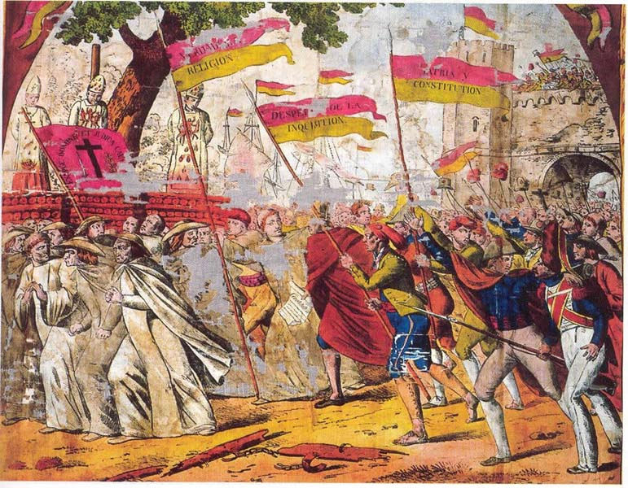

Constitución de 1812
Aprobada el 19 de marzo de ese año, fue la primera en la historia de España y una de las primeras del mundo.
Limitaba el poder absoluto del rey, a cuyo regreso se instauraría una monarquía constitucional y la división de poderes: el monarca se mantendría a la cabeza del Poder Ejecutivo, pero el nuevo sistema cedía el Poder Legislativo a un parlamento de cámara única. éste era tal vez el aspecto más radical de la constitución: como en Francia, todos los ciudadanos eran considerados iguales (mientras que en Inglaterra y los Estados Unidos, otros países donde existía un sistema parlamentario, la organización bicameral mantenía las distancias entre los notables y aquellos ciudadanos que sólo podían aspirar a la "cámara baja"). En la Constitución de 1812 se decreta además la libertad de expresión, son abolidas la Inquisición y las organizaciones que coartaban la libertad de los trabajadores, y se otorga al Estado el monopolio de recaudar impuestos (compartido hasta entonces con la Iglesia).
La Constitución representaba, por último, un cambio en la definición
de España y de lo español: se hablaba de una nación española, no del reino. Se diseñaba así un concepto de identidad nacional que
no tenía que ver con la lealtad a una Corona sino con la pertenencia a una
nación. Desde ahora no habría simplemente súbditos del rey, sino españoles.

"La abolición de la Inquisición" (Pañuelo de seda. 1821. Barcelona, Museo Textil y de la Indumentaria).
El gobierno español promovió una gran cantidad de imágenes acerca de las medidas tomadas por las Cortes. No se limitaban a cuadros o representaciones teatrales, sino que incluían objetos de la vida cotidiana: en este caso, un pañuelo. El uso de imágenes, celebraciones y textos alusivos como forma de publicitar y apoyar la actividad del nuevo gobierno había sido muy importante en la Revolución Francesa y sería empleado intensamente también por las repúblicas de América. En esta imagen, las fuerzas "oscurantistas" y "reaccionarias" de la religión son expulsadas por las "banderas de la libertad".